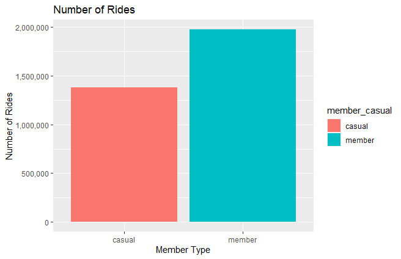
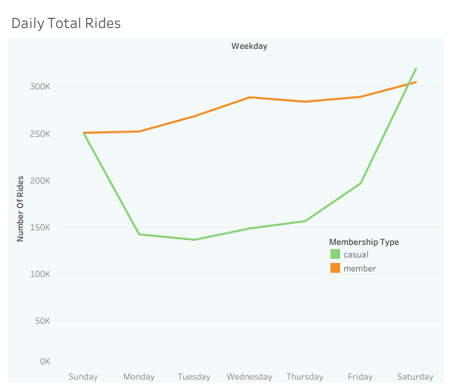
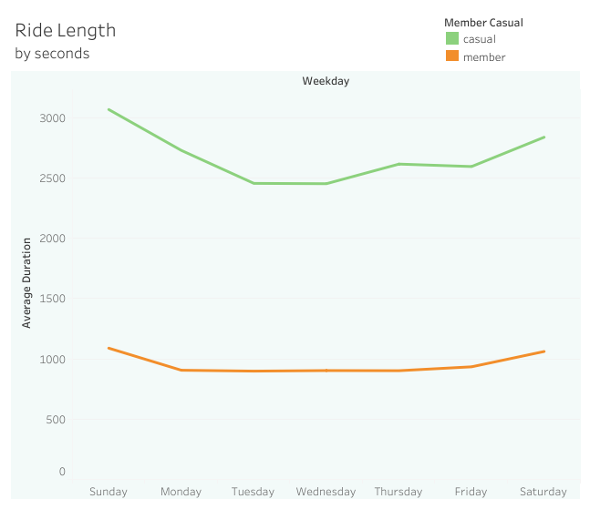
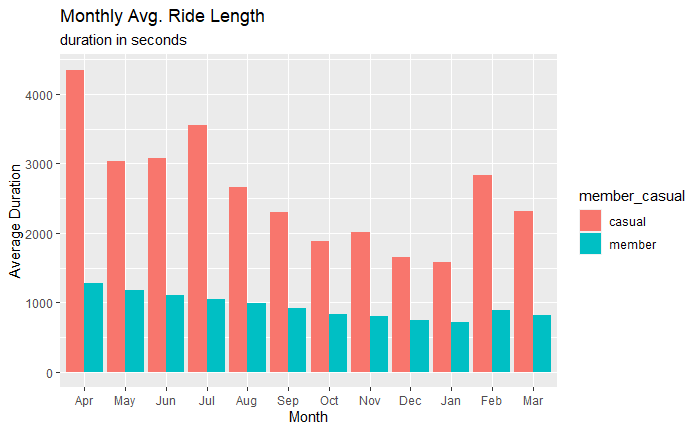
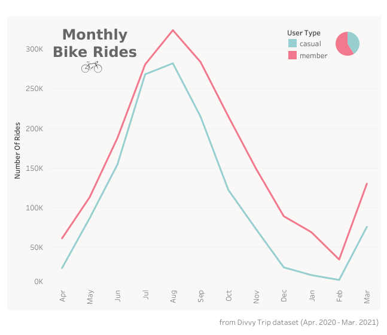

In 2016, Cyclistic launched a successful bike-share oering. Since then, the program has grown to a fleet of 5,824 bicycles that
are geotracked and locked into a network of 692 stations across Chicago. The bikes can be unlocked from one station and
returned to any other station in the system anytime.
Until now, Cyclistic’s marketing strategy relied on building general awareness and appealing to broad consumer segments. One
approach that helped make these things possible was the flexibility of its pricing plans: single-ride passes, full-day passes, and
annual memberships. Customers who purchase single-ride or full-day passes are referred to as casual riders. Customers who
purchase annual memberships are Cyclistic members.
Cyclistic’s finance analysts have concluded that annual members are much more profitable than casual riders. Although the
pricing flexibility helps Cyclistic attract more customers, Moreno believes that maximizing the number of annual members will be
key to future growth. Rather than creating a marketing campaign that targets all-new customers, Moreno believes there is a very
good chance to convert casual riders into members. She notes that casual riders are already aware of the Cyclistic program and
have chosen Cyclistic for their mobility needs.
Moreno has set a clear goal: Design marketing strategies aimed at converting casual riders into annual members. In order to do
that, however, the marketing analyst team needs to better understand how annual members and casual riders dier, why casual
riders would buy a membership, and how digital media could aect their marketing tactics. Moreno and her team are interested in
analyzing the Cyclistic historical bike trip data to identify trends.
How do annual members and casual riders use Cyclistic bikes differently?
You will use Cyclistic’s historical trip data to analyze and identify trends.
Download the previous 12 months of Cyclistic trip data here.
(Note: The datasets have a different name because Cyclistic is a fictional company. For the purposes of this case study, the
datasets are appropriate and will enable you to answer the business questions. The data has been made available by Motivate
International Inc. under this license.) T
This is public data that you can use to explore how different customer types are using
Cyclistic bikes. But note that data-privacy issues prohibit you from using riders’ personally identifiable information. This means
that you won’t be able to connect pass purchases to credit card numbers to determine if casual riders live in the Cyclistic service
area or if they have purchased multiple single passes.
These are the data cleaning techniques I used to produce the cleaned the dataset.
An R markdown that demonstrates the step-by-step process of data cleaning conducted is also available here.
Overall, there are more annual members ride than casual users ride (1.9million vs. 1.3million).
There are more casual user rides in the weekend and more member rides in the weekday. There is nothing really important to deduce in this information.
However, looking at the duration per day of the week, an emerging trend can be seen. We can see that casual riders use Cyclistic bikes longer than the annual members.
This pattern can be even seen by looking at the monthly average ride duration.
Another important thing I notice is the pattern I see at the monthly total rides. There is a very noticeable spike around July until Spetember, during summer.

All things considered, I managed to come up with three effective and efficient suggestions that may help Cyclistic convert casual users into annual memberships.
Create reward system based on ride durations for annual members.
Limit rental duration for casual users.
Create annual membership promotion during peak season. (Seasonal promotion)
I also think that doing further studies and exploration in the following topics will help Cyclistic develop more effective methods in converting users.
1) How can we utilize our different rideable bikes(Classic bike, E-bike) to attract users?
2) Number of one-day/two-day passes purchased by casual users.
3) What can we do to attract casual users living near Cyclistic bike users to get annual passes?